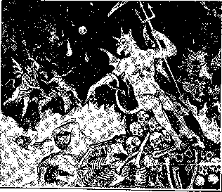

‘VoL VI' ' B R O O K L Y N , N. Y. . No. 9.
be discerned that he was not in harmony with any of these errors.
The Real “Faith Once Delivered.”
■4"s’ the body is one, and hath many members, and all the members of that one body, being many, are one body, so also is Christ; for by one spirit are we all baptized into one body. * * * “There is one body, and one spirit; even asl’ellr^. caJ'Jc.<l ln P,ne hope of your calling; one Lord, one Faith, one Baptism, one God and Father of all.”
H call heresy, so worship I the God of my fathers.” * * *
---------- tell you the truth?” If so, then “I have become a fool for
Cor. 18:12, 13; Eph. 4:4-6; Acts 24:14; Gal. 4:16; I Cor. 4:10.
. ailed tn one hope of your calling;
* * “After the way which they [many] “Am I become your enemy because I tell
Christ’s sake.”—I
*1 ''HAT during the Gospel Age God has been selecting a Church is admitted by all Christians except Universaiists; and that all thus selected constitute the one Church, and that a membership in that one Church can be secured only during the present life—during the Gospel Age —are also generally admitted to be the teachings of the Bible.
And many will admit, also, that our present union with Christ’s Body, the Church, though precious, is but a probationary membership, which will be confirmed and made everlasting only by introduction. into full membership in the Church triumphant, at the close of the present life.—John 15 :5, 6 ; Phil. 3 :12-16, But, while we and other Christians agree that the Church triumphant is to be one Church, and not many churches, there are parts and bearings of the subject regarding which all are not agreed.
We hold that the conditions of the present trial, of all accepted as probationary members of the Heavenly Church, are very severe and exacting, and that the selection is consequently much small-
were dividing into Paulites, Apollosites and Peterites, while a few rightly clung to the name Christian.
“Is Christ Divided?”
While the taking of different names was wrong, it was an evidence of a deeper wrong—of a selfish, party spirit. It was an evidence, so points out the Apostle, that those Corinthians who took the party names had never properly recognized 1 the oneness of the Body of Christ; that they did not really appreciate that Christ is the only Head, Leader and •Standard; and that His is the only name by which His followers should recognize., themselves and each other. Where scoffers apply a name in derision, it is not the fault of the faithful; but the true, loyal soldiers of the Cross should never own or recognize such a name.
Instances of names so originating are “Methodist” and “Baptist,” both of which were given in derision, but were afterward adopted as party names, representing sects, factions or divisions in
sects so as to make (nominally)
one
,er thai lios>e-.--1
Ihristian people generally sup-
■ the Body of Christ. All true teachers.
Church, while each sect therein may retain its own special features; of faith or disbelief as at present. All in such a union (of which the Evangelical Alliance was a beginning—advanced a stage, now, in this country, by the organization of the “Federation Council of the ■Churches of Christ of America,” representing thirty different denominations) merely agree to disagree, live and let live, and to recognize each other in this general way, because of an increased influence, power and protection which the association will bring to each, and because it would detract from the influence of other sects not so associated, and thus hinder independence of thought. This would serve to fix and establish an “orthodox” boundary line, inside of which there would be bounds to individual liberty, and yet a measure of freedom, a permission to have a preference among the forms and doctrines of these associated sects, and still permit them to be recognized as “orthodox.”
But,
even when fully consummated,
only a Little Flock is now “ea. (Luke :32.> Many sup-:he object of our God in call-
being sffireete_.
pose that the ______
iiig the Church and promising -this class high exaltation was merely to save
them from everlasting torment.
We claim, and find and produce abundant Scripture proof of it, that God’s object in this selection, training, discipline and final exaltation of the Church, is for the ultimate purpose of blessing, through them, all His fallen, sin-stricken creatures (human and angelic), by granting to all a full, perfect judgment, or trial, under most favorable conditions, of which perfect knowledge and sufficient help will be the chief elements of favor. Thus seen, the Church is being selected for the great work to be accomplished during the Millennial Age, of restoring “whosoever will” of the fallen ones tfo their former estate, and of consigning the wilfully unholy to the Second Death—everlasting punishment—everlasting destruction.'-Jude 12; 2 Thess. 1:9; 2 Pet. 2:12; Acts 3:23.
Sectarianism Evidences Carnality.
There is only one Church now, as there will be but one Church in glory. Our Lord and the Apostles never recognized any but one Church on earth; so far from establishing many, or recognizing many, they denounced all efforts to separate into different parties and under different names, as schismatic, sectarian, and contrary to God’s will, as injurious, and as an evidence of carnality in all who consented to or. aided such divisions of the probationary Church.
St. Paul’s able and pointed reasoning upon this subject is partially obscured by the common translation, yet. even there, when attention is called to it, the trend of the Apostle’s reasoning is clearly discerned; much more so in that valuable and generally very faithful translation, the Emphatic Diaglott. He exhorts that those teachers who favor divisions in the flock of Christ, contrary to the doctrines of our Lord Jesus, be “watched,” and avoided; because they are not following the Lord’s will, but their own. And, he adds, by kind and complimentary words they mislead the unsuspicious. (Rom. 16:17, 18.) He reproved the Corinthian Church because of a tendency toward sectarianism among them. (1 Cor. 1:10-13; 3:3-6.) They
. are. not only , sent by Christ, but receive this c^uld be no more tlian a union in their instructions from Him ; and any man navie,_ with the same divisions and dif-
. -w;.-. utwiiipto.-' to. jjUl ‘ms oWii yij; 'tereiices in iact^^fie ‘ cfiurch’nommaiiy,
oilier name upon all or any poi'tion oi i)ut manv secis really
; the\Church is an opponent, an adversary,: The first danger against which the ! "L® true ana only Lord, and Head of ■ Apostle warned the Church was sectari-
The first danger against which the
the Church.
He is a mis-leader and an
BATTIE OF ABMAGEDDOS.
A postal request will secure a free copy of this paper in which this interesting subject is treated in a manner sure to satisfy. Address I. B. S. A.. 13 Hicks St., Brooklyn, N. Y.
evil-doer, no matter what his claims or motives may be.
The Apostle, upbraiding the Corinthians and seeking to show them their error in owning any other teacher besides Christ to be their Head and Standard and Leader, asks, “Has Christ been divided?” Are there several seeds of Abraham now, each an heir of a promise? Is this the reason you countenance divisions into different parties? Or is it because one of these leaders—Paul, Apollos or Peter—has specially favored you and put you under obligation to him, that you requite him by calling yourselves his servants and followers, bearing his name? Was Paul crucified for you? or were you baptized in his name?
Nay, nay, dearly beloved; One. and only One, deserves all the honor of the Church, both now and forever, and that One is her true Lord and Master; and His name only should she own in any manner. He leads; He teaches; He feeds; and the various human agents used by Him, as channels for His blessings to His espoused, should neither take His place in her heart nor share His honor before the world. We may, however, and should, honor His servants “for their works’ sake,” and count those who serve well as worthy of double honor; but we must always “hold the Head,” ■and render Him supreme reverence and obedience. (1 Thess. 5:13; 1 Tim. 5:17; ■Col. 2:19.) Our esteem for others should be “in the Lord.”
For a long time Christians recognized this true principle, that there is but one Body, or Church, on earth, even as there will be but one in glory. And. following this idea, each sect claimed to be that one, the only true Church, and persecuted others. But by and by each began to see in the other certain good features of doctrine and practise, and gradually ■their ideas changed, until to-day they, claim boldly, and in opposition to the Word of our Lord and of the Apostles, that sects are a decided advantage; that the human mind is so constituted that a common faith, which St. Paul urges upon the Church, is an impossibility; and that the various sects of to-day, with their contradictory diversities of faith, are necessary accommodations to human prejudices and imbecility:
A Union in Name Only.
Yet, still clinging to the idea that somehow there should ;be but one Church, they are anxious to reunite all the larger
; anism; and he was evidently heeded at : the time at least, for no great sects of Paulites or Apollosites developed.' But, as usual, the great Enemy, thwarted in one direction, moved to the opposite extreme, and attempted to insist upon a oneness very different from what our , Lord or the Apostles ever taught. This attempt was to have every recognized member of the Church think exactly alike on every minutia of Christian doctrine. ■ This attempt finally developed into Papacy, where every matter of doctrine was decided by the popes and councils; and every man who desired to be considered a church member was obliged to accept such decisions fully, and to profess that such were his belief, his faith; whereas they were not 'his in any sense, but that of adoption. They were generally either ■blindly received or hypocritically professed with mental reservations.
Scriptures Urge Only Oneness of Heart and Mind.
This was not at all the oneness urged by St. Paul. He urged a oneness of heart and mind, and not a thoughtless, heartless or hypocritical profession. He urged a oneness such as naturally results from the proper exercise of the liberty which we have in Christ—to search and believe the Scriptures, and to grow in grace and in knowledge, every man being thus fully persuaded in his own mind, and firmly rooted and grounded in the one faith, as set forth in the Scriptures. The oneness of faith which St. Paul urged was not that elaborate faith which touches and embraces all subjects, Heavenly and earthly, Divine and human, re-' vealed and unrevealed. Quite the contrary : St. Paul’s letters, weighty with logical reasoning, do not even mention the subjects upon which sectarians most insist, and which are by them generally made tests of fellowship.
St. Paul said nothing about an everlasting torture of sinners ; he said nothing whatever about a mysterious “trinity.” in which three Gods are incomprehensibly one God and at the same time three Gods; he said not a word about man being of a nature such as could not die but must live everlastingly, in a place of either pleasure or woe; he said nothing, either, about the present life ending all
Notice particularly, however, that without so much as mentioning a single one of these sectarian tests of fellowship, St. Paul declares—“I have not shunned to declare unto you the whole counsel of God.” (Acts 20:27.) From this it is very evident that none of these points, which are to-day regarded as the very essence and substance of Christian doctrine and as the proper tests of faith, is the one faith, or in any sense or degree part of “the faith once delivered unto the saints.”—Jude 3.
The one faith, which all should hold, was a very simple one; one so simple that all, the learned and the unlearned alike, could grasp it and comprehend it, and be “fully persuaded in their own minds” concerning it. It was not a dose of incongruous mysteries, inconsistent with themselves and inharmonious with reason as well as with the Bible, to be swallowed by the ignorant with credulity and by the learned with hypocritical •mental reservations; but it wTas so simple, so clear, so reasonable, that any and every honest follower of Christ could be fully persuaded in his own mind regarding its truth.
What is this one faith? The basis of it is stated by St. Paul thus: “I delivered unto you first of all, that which I also received [first of all—as a foundation truth or doctrine, upon and in harmony with which all other doctrines must be built], how that Christ died for our sins, according to the Scriptures; and ilia-L He nab buucu, *i.u IIv '
■again the third day, according to the 'Scriptures.” (1 Cor. 15:3,4.) “There is one God and one Mediator between God and men, the Man Christ Jesus, who gave Himself a 'Ransom for all, to be testified in due time.”—1 Tim. 2 :5, 6.
This, in a word, confesses sin and utter helplessness; it acknowledges God’s loving Plan for our redemption; it owns that our Lord’s death was our Ransom- 7 price; and that forgiveness (justification), and reconciliation to God, and the restitution of believers, come as a result of faith in this Redeemer, when in due time that Plan is made known to all.
These brief statements contain the whole Gospel, in the same sense that an acorn contains an oak tree. Withoiit this Gospel kernel, the true Gospel can never be possessed; hence this must be insisted upon as a test of Christian fellowship. This must be received, else the Gospel is not received. When it is received, the Gospel is received. Then a work of growth begins—a development of this Gospel. It may vary in rapidity of growth according to temperament and surroundings. An acorn can develop into a sprout, a sapling, a sturdy oak successively, but the nature ' of the seed will appertain to it in every stage of its development. So is faith—the true faith ; it must begin with the one kind of seedfaith in all, no matter what stage of development each may attain. This one Gospel acknowledges man’s fall and sinfulness, and God’s mercy and love manifested through Christ’s great work of redemption, forgiveness and final restoration of all the willing and obedient, but of no others. All theories, and they are many, which omit any of these items are spurious.
Some, deny God’s love in the matter, and claim that all the love was Christ’s and that He interposed and thwarted the Father’s original Plan; but those of the one faith are guided by our Lord’s own testimony, that God so loved the world that He devised the Plan as it is being carried forward, and sent His Only Begotten Son to do what He has done and is yet to do for the world. ( John 3 :16, 17.) Others deny that any redemption was accomplished by the death of our Lord Jesus, deny that His life was substituted as a corresponding price, or “Ransom, for all,” and claim that the Father does all by simply pardoning the sinners. But again the one faith is clearly pointed out by the words of St. Paul
trial for all classes; and he entered into —“There is one Mediator between God
no entangling discussion about the bread
and men, the Man Christ Jesus, who gave
and wine used in commemoration of the himself a Ransom [corresponding price] Lord’s death—as to transubstantiation "
or consubstantiation •. yet it can easily
for all.”—1 Timothy 2:5, 6.
(Continued on 2d page, 1st column.)
13-17 KICKS ST., BROOKLYN, N. Y.
C. W. HBK, Editor.
An Independent, Unsectarian Religions Newspaper, Specially Devoted to the Foi'warding of tlie Laymen’s Home Missionary Movement for the Glory of God and Good of Humanity.
Monthly—12 cts. a year. Single copies 1c. (Continued from 1st page, 4th column.) “CHURCH OF THE LIVING GOD”.
When received into honest hearts, this simple Gospel, the true Gospel, will gradually open up and spread its roots of reason and its branches of hope in every direction. The heart thus feeding upon the promises of God, is built up as He designed, and grasps, as it progresses, ■the “one baptism” and every other feature of the Gospel in its fulness.
God’s Test vs. Man’s Test.
Note the difference between this, God’s test, on the simple first principles of the Gospel, and the wrong course of men who attempt to enforce upon all an entire system of faith (and that when they are the merest babes in Christ), so fettering them, then, that their growth is hindered. To ask babes in Christ to assent to thirty or forty articles of faith arranged by fel-lowmen, and to agree to take those as the infallible Truth, and to promise never to believe either more or less than they contain, is like selecting in an orchard one gnarled and crooked tree, as a standard, and requiring all the other trees to be padded out to make them look as thick and as gnarled as the sample, and to be bound with iron bands that they might never grow larger or straighter.
This true Gospel, this simple faith, easily understood and confessed by the 'weakest babe in Christ, must also be, and always, and equally, the faith of the most developed sons of God. This one faith (and not the endless ramifications and details of faith which lead out from it) St. Paul placed as a standard, or test, of all claiming the name Christian. All the consecrated who agreed on this one standard, or foundation truth, St. Paul counted as in and of the one Church. While each member was to grow in grace, knowledge and love, there would always be harmony, and oneness in the faith and fellowship of the Church, if all growth AVere kept in line and iiarmony with this foundation truth.
Here was a perfect basis of „ union, which allowed for all the various stages of individual development in the Truth, and which most effectually guarded against errors. For if this simple creed were today made the standard by which all doctrines should be tested, it would speedily lead to the discarding of every error and to the true union of the Church in the “one Lord, one faith, one baptism.”
'The endeavor to compel all men to think alike on all subjects culminated in the great apostasy and the development of the great Papal system ; and thereby the “Gospel,” the “one faith,” which St. Paul and the other Apostles set forth, was lost—buried under the mass of uninspired decrees of popes and councils. The union of the early Church, based upon the simple Gospel and hound only by love, gave place to the bondage of the Church of Rome—a slavery of God’s children, from the degradation of which multitudes are still weak and suffering.
The Reformation movement of the sixteenth century came as an effort to regain liberty of conscience; but, deluded by the idea of an elaborate creed, insisted upon for so many centuries, the reformers and their followers formed other systems of bondage very similar to that of Papacy, though slight modifications gave liberty to fuller ideas on some subjects. And so it has been ever since. Each new reform movement has made the failure of attempting to make a creed just large enough for its prime movers.
A “Church Trust” Undesirable.
But while divisions in the Church of Christ are very wrong, and very contrary1 to the will and Word of our Lord, they
X FREE LITERATURE! X
Send postal-card request to the & editor for free copies of this paper. Vs Some of the interesting subjects & you may have for asking are: &
Calamities—Why Permitted?
Vs Prince Lucifer of Old Now Prince & Vs of Demons.
V? Do You Believe in the Resurrec- & Ition of the Dead?
Which Is the True Gospel?
The Rich Man in Hell.
The Handwriting on the Wall.
Purgatory Fires—‘Not Now—Soon! V The Sabbath Question.
The Battle of Armageddon.
Distress of Nations Preceding w
Why Financiers Tremble. are better far than a union in bondage under Papacy’s system, creed, etc. Instead, therefore, of attempting to get all the sects to combine in a sort of “Church Trust,” an image, or likeness, of the Papal system of oneness (though on a higher plane), to regulate and restrict further investigation and further growth, we need to do the very opposite—-to abolish all sects and all elaborate creeds and confessions of faith. Instead of being-further bound (by such a Church Trust Union—or wheel within a wheel, double imprisonment), all 'bondage should be set aside, except the simple tests first imposed in the one faith once delivered to the saints ; and all party, sectarian names, should be repudiated, and the name of Christ should be the only name borne by His Church.
Such a breaking down of sectarian fences would leave the true children of God willing to accept the original and simple test—“all one in Christ Jesus”; and this is what is needed. It would destroy sectarian pride, which so often counterfeits true Christian zeal and love, but it would tend to develop the Truth, and thereby to develop the real zeal for the Truth which our Lord desires in His followers. The term Church of Christ would no longer mean to any “our denomination;” but when they would sing:
“I love»Thy Church. O God;
Her Avails before Thee stand ;
Dear as the apple of Thine eye. And graven on Thy hand”
they would think, instead, of the one, true and only Church.
He^ds a. nd Hearts Would Be Joined.
Under Such conditions, recognizing the true and only test, as above quoted from St. Paul, those who formerly championed opposite sides of the various questions of doctrine would join heads and hearts in carefully weighing the various statements of the Scriptures; and, truly seeking the Divine Plan, they would ere long, as promised, be guided “into all Truth.”
They would join hearts and hands as Christians, and while their heads might not at once agree on certain points, it would be a question of only a short time; for the unbiased study of God’s Plan, with no sectarian theory and organization to uphold, would bring the heads of all into union and general harmony, even though, as at first, the growth of faith-roots and faith-branches might vary. All would believe the “same things,” even if some could see and believe more elaborately than others.—Phil. 3:15, 16.
This freedom,.....and ■■yet- harniony and
union, which is the result of a full acceptance of God’s will and Word, will not be attained in the present Age except bjr the few, the “overcomers.” Others, the Scriptures show, will continue in sectarian bondage, and even increase their bondage-union by a Church Trust or “Confederacy” (Isa. 8:12). until, in the close of this Time of Trouble, all this is corrected by the fall of sectarian systems as well as of present political governments.—Dan. 12:1; Rev. 18:2-5.
In the next Age, during the world’s trial, such great deceiving systems will not be permitted ; but now they are permitted in order to accomplish the testing and manifesting of the “overcomers.”
Downfall of Sectarianism Essential.
And now the breaking up of these numerous sects, so that each individual will be free, is essential to a fuller growth in grace, knowledge and love than is at present possible. This brer king, up of sectarianism, now regarded as a calamity, will 'by and by be recognized as truly the greatest of all religious reformations. The signs of the times indicate that such a reformation is impending, and the Scriptures declare it. A little more light, a little more knowledge, and these sectarian shackles upon the individual conscience will fall. Then whatever union shall exist will be upon Tight principles—a union of hearts and principles and not merely a heterogeneous confederacy. Recognizing each other’s personal liberties, each disciple of Christ will be bound to the other by his love of the Lord and of His Word alone; and others will be separated.
Sectarianism has woefully distorted that beautiful figure of Christian union given by our Lord, recorded in John 15 :l-6. To fit it to sectarianism, and to make their error in 'this appear to be supported by God’s Word, it is claimed that the “vine” is the 'whole Church, and that the various denominations of “Christendom” are the branches. But that the Lord’s words will bear no such construction must be evident to any one who will give the passage candid consideration. The branches are the individuals, and “any branch” is defined by our Lord’s own words to be “any man.” Let this, our Lord’s illustration of the proper union of all the branches in One Vine, connected and nourished by the same sap, from the same roots, teach us of true union and personal freedom in the Body of Christ.
A Blessing Would Follow.
Suppose that the salaries and “livings” of all ministers, bishops, priests, etc., were cut off, all churches, chapels and' 'cathedrals destroyed, all theological seminaries broken up, and their professors turned to other pursuits, all religious guilds and societies disbanded, including all sectarian organizations—what would be the effect?
Who can doubt that it would be a real blessing under the disguise of a great and terrible catastrophe? The effect would be to bring true Christians together as the family of God, and not as sectarian bands; to study 'God’s Word, and not human traditions and creeds formulated in the Dark Ages. Very soon, unhindered, God’s Word would be heard by all truly His; and one Lord, one Faith and one Baptism would soon be the result, while the worldly mass would speedily drift apart, and the true distinction between the Church and the world would be discernible. The Scriptures seem to indicate that very much of this sort of destruction-of present systems must take place before all the “wheat,” the true Church, will be separated from the “tares,” the mere professors. Party spirit and love of sect are so strong that, apparently, nothing short of a complete wreck of all the sects will suffice to set free God’s children now bound and blindfolded in and by them.
This catastrophe—sectarian destruction, the fall of Babylon—is what is referred to in the Book of Revelation under the symbol of the seven last plagues. (Rev. 15:1-8.) The pain from these will consist largely of mental chagrin, the disappointment of sectarian hopes and plans, and the wounding of sectarian pride. When the Master said, “Watch ye, that ye may be accounted worthy to escape all these things coming upon the world,” he included the pain of these plagues, as well as other annoyances to which the world will be subject because of ignorance of the real Plan of God. It is of escape from these plagues that the Revelator (our Lord—Rev. 1:1) speaks to us, saying, “Come out of her, My people, that ye be not partakers of her sins, and that ye receive not of her plagues.”—-Rev. 1'8 :4.
Three Views of the Church.
A dear brother sent us the following clipping, with the remark, “Two views well stated. Please give us the third and true one”;
“There are two conceptions of the Church, which, for convenience, I shall designate as the Protestant and the Catholic conceptions. The Protestant idea of ■the Church is that it is a voluntary association of believers in Christ; that those ■who think alike upon religious subjects join together in a society and choose their pastor, who derives his commission and liis authority from them. Consequently they are at liberty to prescribe what he shall and shall not teach, or to unmake their church and make another, precisely as the members of a club or of a political party have a right to withdraw and form a new organization. The Protestant theory of the Church is that of an aggregation of individuals,‘who can rearrange themselves at will, and thus create new churches at every rearrangement.’ (Eicer.) The Catholic theory, on the other hand, is that it is an organization which God Almighty has founded once for all, to last to the end of time, and into which He invites men; it is His family, His household, His Kingdom, His city. Its officers are commissioned by Him and hold their authority as teachers ■only from Him. In a word, the Catholic Church is not a democracy, but an empire ; not a republic, but a kingdom. As such, it comes to man with Divine authority; its officers are under oath to the Eternal King, and they are to minister to man in His name, and for Him.”—The Living Church.
In presenting the true view of the Church, we labor under the disadvantage that for fifteen hundred years people have been taught one or the other of the above views, or combinations of both, while the true idea has been generally lost sight of since the second century. The true view, as we conceive it, is as follows:
God’s Church, when completed and organized, will be all that is given above as the Catholic or Episcopal view. But it is not yet completed, and hence not yet organized. When organized, it will be clothed with power, and will be, “not a democracy, but an Empire; not a republic, but a Kingdom. As such it [will] come to man [the world—during the Millennium] with Divine authority [and with power to back up that authority]. Its officers are [then to be] under oath to the Eternal King, and they are to minister to man in His name, and for Him.” All this, it is to be noted, fits exactly to the coming reign of the Church, when it shall “bless all the families of the earth” ; but it does not fit at all to the present state or condition. There is no organization today clothed with such Divine authority imperiously to command mankind. There is no organization doing this today; though we are well aware that many of them in theory claim that they ought to be permitted to do so; and many more would like to do so.
This was the fatal mistake into which the Church began to fall in the second century; and the effort to realize this ’false conception culminated in the boastful. imperious counterfeiting of the coming Kingdom in Papacy, which for centuries sought to dominate the world, by claimed “Divine authority.” This idea has more or less pervaded and poisoned the ideas of all the Protestant “clergy” as well; who, copying Papacy’s false ideas of the Church, claim also that the Church of Christ is now organized, though they make less boastful claims to “Divine authority,” to teach and rule mankind in general, than does Papacy.
God’s Church is not yet organized. On the contrary, the Gospel Age has been the time for . calling out and testing the volunteers willing to sacrifice and suffer with their Lord now, and thus prove themselves worthy (Jtev. 3:4, 5, 21; 2 Tim. 2:11, 12; Rom. 8:17) to be recognized as joint-heirs in His Kingdom at the close of the Gospel Age, when He shall “set up,” or organize. His Kingdom in power and great glory, to bless and rule the world with “Divine authority.”
In the meantime, these unorganized but merely called out ones, who are seeking to make their calling and election sure, that they may obtain a share in the Kingdom (2. Peter 1 :10; 2 Cor. 5:9), are “a voluntary association of believers,” drawn together for mutual assistance in seeking to know and to do the Master’s will, that they may be accounted worthy the honors and glories promised, and not now to rule men by Divine authority; for they have as yet no such authority. In this “voluntary association” of the consecrated, there is no imperial authority of one over another ; and no lording over God’s heritage should be permitted; for the one and only Lord has left the instruction, “Be not ye called Rabbi; for one is your Master, even Christ, and all ye are brethren.”—Matt. 23:8.
Instead of the kingly and lordly rule prevailing in the customs of the world, the Master gave all another and an opposite rule, saying, “Ye know that they which are accounted to rule over the Gentiles exercise lordship over them ; and their great ones exercise authority upon them. But so shall it not be among you ; but whosoever will be great among you, shall be your minister [literally, servant] ; and whosoever of you will be the chiefest, shall be servant of all [or greatest servant] ; for even the- Son of Man came not to be ministered unto [to be served], but to minister [to serve], and to give His life a Ransom for many.”— Mark 10:42-45.
The Lord was Chief Servant; and those among the Apostles who served the Church at greatest cost to themselves—• Paul, Peter, John and James—are esteemed, by those who have the Spirit of' the Truth, in' proportion' and not in proportion to their titles, their priestly vestments, or their praise among men, etc., of which they had none.
The Church, or company of believers, probationers for coming glory, in its “voluntary association,” was indeed to recognize “teachers,” “helps,” “apostles.” etc., but not to make them. If they recognize a man “mighty in the Scriptures,” “apt to teach,” able to make clear the Divine Plan, and specially qualified to build them up in the most holy faith, they gladly acknowledge God’s favor in raising up among them such a servant of all to assist them in the understanding of His Word. But they should be careful always, even while rejoicing in and thanking God for such a servant, to require a “thus saith the Lord” for every point of doctrine, and to search the Scriptures daily to see whether these things be so—whether the deductions and arguments of the teacher agree with the whole testimony of God’s Plan.
Thus the Lord is the Teacher of His followers, sending, now and again, of their own number, certain ones to call attention to truths being overlooked, or to’ injurious, errors being entertained. The “meek” among the probationers will hear the Master’s voice by whomsoever He speaks; and these will be guided into the Truth, and prepared in due time for organization as His Kingdom. “The meek will He teach His way.”—Ps. 25:9.
Thus seen, both the Catholic and the Protestant views of the Church are erroneous. The Catholic view gets the future organization applied to the present time, and the Protestant view, though ridding itself of some of Papacy’s error, carries along enough of it to injure itself; for, instead of admitting all consecrated believers into a “voluntary association,” in. which God would raise up His own teachers, Protestantism attempts also to organize and bind with creeds and confessions into various sects, each of which, anxious to perpetuate itself and its ideas, selects and makes its own teachers in its own seminaries.
The True Church;
We ‘wish now to show, from God’s Word, .first, what Church our Lord established, and what are its bonds of union; second, that every Christian should belong to that Church ; third, the injurious effects of joining the wrong Church; and fourth, having joined the right Church, what would be the results of losing our membership.
First, then, the Church which our Lord Jesus began to gather during His ministry, and which was recognized by the Father at Pentecost, after the Ransom-price for all was provided, was the little company of disciples who had con-
secrated earthly time, talents and life, a sacrifice to 'God. Theirs was a “voluntary association” for mutual aid; and this society was under the Laws and Government of Christ, its Head or recognized ruling authority. The bonds were bonds of love and common interest. Since all were enlisted under the captaincy of Jesus, the hopes and fears, joys and sorrows and aims of one were those of the others; and thus they had a far more perfect union of hearts than could possibly be had from a union on the basis of any man-made creed. Thus their only union was of the. Spirit; their law for the government of each was love; and all, as a whole, were put under obedience to the “law of the Spirit,” as it was expressed in the life, actions and words of their Lord. Their government was the will of Him who said, “If yei love Me, keep My Commandments.”
There are two senses in which the true Church of Christ may be considered: All who, like the early Church, are fully consecrated to the doing of our Father’s will, amenable only to Christ’s will and Government, recognizing and obeying none other—these, the saints, from the beginning cf the Gospel Age down to its close, when all of this class will have been “sealed”—constitute
The Church of the First Born.
[whose names are] written in Heaven. These are all one in aim, hope and suffering, and in due time will be jointheirs with Christ Jesus to the great “inheritance of the saints in light”—jointheirs with Him in the Kingdom which God has promised to those that love Him.
The other sense, in which this same class is recognized, is by counting a part for the whole. Thus all the living of this class may be spoken of as “the Church”; or, again, any part of this class of living followers who may meet together may properly be called the Church; for, wherever two or three are assembled, the Lord has promised to be among them. Consequently, that would be a Church meeting—an assembly of “the Church of the First-born.” The general assembly will be when all the Church are made like their Head, and glorified with Him.
Such, then, is our definition of the Church of Christ. It is perfectly illustrated by St. Paul (Rom. 12:4, 5), when he compares the Church to a human body. In this figure the head represents our Lord, and all who are His constitute the Body, over which the Head rules. Jesus has been and always will be the Head over His Church as a whole; U?■ Ho-id and Ruler of
the entire living Church; and in every assembly where two or three meet in His name (When His Word is sought and heeded), He is the Head, Ruler an J Teacher.—Ephesians 1:20-23.
How to Join the True Church.
This brings us to our second proposition, viz.: that all Christians should be joined to this association, or incipient organization. In the light of what has just been said as to the class constituting the Church which our Lord is calling, it is evident that if you have given up all your will, talent, time, etc., you are recognized by the Lord as a probationary member of the Church, of which He is the Head, and whose names are written in Heaven. Thus, by consecration, we join the true Church, and have our names recorded in Heaven.
But, says one, must I not join some organization on earth, assent to some creed, and have my name written on earth? No. Remember that our Lord is our Pattern and Teacher, and in neither His words nor acts do we find any authority for binding ourselves with creeds and traditions of men, all of which, tend to make the Word of God of none effect, and bring us under a bondage Which will hinder our growth in grace and knowledge, and against which St. Paul warned us, saying, “Stand fast in the liberty wherewith Christ hath made you 'free, and be not entangled again with the yoke of bondage.”—'Gal. 5:1.
Another says: “If it is not proper to unite with any of the present nominal churches, would it not be well to form a visible association of our own?” Yes, this is what we have—a society modeled after that of the early Church. We think we have come back to primitive simplicity. The Lord Jesus alone js our Head or Law-giver; His Word is our rule of faith and practice; the Holy Spirit is our interpreter and guide into Truth; our names are all written in Heaven; and we are bound together by love and common interest.
Do you inquire, How shall we know one another? We ask, How can we help knowing one another when the Spirit of our Master is made manifest in word and act and manner and look? Yes, the living faith, the unfeigned love, the long-suffering meekness, the childlike simplicity, coupled with the constancy and zeal of maturity, make manifest the sons of God, and we need no earthly. record, for the names of all such are written in the Lamb’s Book of Life.
Do the sick need visiting or assistance? These stand ready with consecrated time. Does the Lord’s work require money? These stand ready with consecrated means. Does His work bring upon them the reproach of the world, and of a de
generate nominal church? These have also sacrificed reputation and all to God.
But, again do you inquire, How shall we deal with one w’ho walks disorderly in our midst? If we have no organization such as we see about us, how can we free ourselves from such, as the Lord requires us to do? We answer: Do just as the Scriptures direct.
Now, as in the early Church, there are various degrees of advancement among the individual members, and, St. Paul says (1 Thess. 5:14), some are feebleminded, comfort them; some are weak, support them; but, while you should be patient toward all, warn the disorderly (those who are drifting away from the true spirit of Christ). Don’t mistake the disorderly for the weak, and comfort them, nor for the feeble-minded, and support them; but patiently, lovingly, warn the disorderly. Whom does he call disorderly?. There are many ways of walking disorderly. In 2 Thess. 3:11, St. Paul speaks of some who wo,rk not at all, but are busybodies, and says they should do as he did—'work, that they be not chargeable to any; and if any will not work, neither should he eat. Thus he said he did, that he might be an example to others; and (verses 14 and 15), after you have warned such a one, if he “obey not, * * * note that man, and have no company with him, that he may be ashamed. Yet count him not as an enemy, but admonish him as a brother.” He warns us also against immoral and unjust persons, and those who "wrest (twist) the Scriptures,, and thus turn the Truth of God into a lie. And the following citations clearly show that, in the Apostle’s estimation, doctrinal disorders are among the chief.—• 2 Thess. 3:6-14; 1 Cor. 5:11; Eph. 5:6-11; Rom. 16:17; 2 John 9-11; Gal. 1:8, 9; Tit. 3:10.
Our Lord gives explicit directions where there is a matter of offense between two brethren (Matt. 18:15-17): “If thy brother shall trespass against thee, go and tell him his fault between thee and him alone. If he shall hear thee, thou hast gained thy brother; but if he will not hear thee, then take with thee one or two more, that in the mouth of two or three witnesses every word may be established. And if he shall neglect to hear them, tell it unto the 'Church [the company of brethren who assemble together] ; but if he neglect to hear the Church, let him be unto thee as an heathen man and a publican.” If, under the captaincy of our Head, we heed His commands, which we will do if we love Him, how few will be . the misunderstandings and difficulties-among the brethren I And if the true brotherhood in Christ is in any degree realized, the admonition of the Apostle will be gladly heeded—“Not forsaking the assembling of yourselves together, and so much the more, as ye see the Day drawing on.”—'Hebrews 10:25.
No Laying on of Hands Necessary.
And if new converts be properly begotten by the Word of Truth, they will be far more eager to meet with two or three possessed of the right spirit and seeking to understand the Word of the Lord, than they would be to mingle with those whose religion consists chiefly of forms of godliness. And here will be the opportunity for those who are strong (in the faith and love of God) to bear the infirmities of the weak and not to please themselves merely—in the choice of subjects, studies, etc.
Should the newly enlightened one know none with whom he can meet personally and regularly, let him not forget his privilege of communion with the Father and the Son in prayer, and with us by mail; and let him seek for others of the truth-hungry among his neighbors—“holding forth the Word of life,” the Truth.
This association has its evangelists, pastors and teachers, appointed and directed by the Lord. (1 Cor. 12:28.) They need no laying on of hands by the so-called “apostolic succession”; for the “Spirit of the Lord hath anointed” all the members of the Body “to preach,” etc. (Isa. 61:1), and it is the duty of every member of the Body to exercise his office for the edification of the other members. All the true Church are priests, an association of priests, and not an association under the control of a clerical or priestly class. (1 Pet. 2:9.) There is one great Bishop or Overseer, who, from time to time, raises up and sends His own special messengers to uncover truths, overthrow errors, etc. Luther seems to have been one of these, and Wesley another. But our Lord retains the Bishopric Himself. (1 Pet. 2:25.) How complete is the voluntary union of the Church of Christ, with its Heaven-written, love-bound, Spirit-ruled membership, and how sad the error of mistaking the nominal for the real Church!
The importance of our fourth proposition "need not be urged. It would, indeed, be a dreadful calamity to lose our membership in the true Church or Body of 'Christ. And no member is out of i danger except when keeping a vigilant ’ watch over the old nature, counted dead, lest it come to life again, and assert itself in the form of pride, selfishness, envy, evil-speaking—or what not. But,
filled with love (the love that, prompts to sacrifice), and clothed with humility, and under cover of the redeeming blood, we are safe- in the Church (the Body), having the assurance that it is our Father’s good pleasure to give us the Kingdom.—Luke 12 :32. Oh, how necessary in this “evil day” is the faith
“That bears unmoved the world’s dark frown,
Nor heeds its flattering smile;
That seas of trouble cannot drown, Nor Satan’s arts beguile” I
Dearly beloved, let us again repeat the warning: “Stand fast in the liberty wrherewith Christ hath made you free, and be not again entangled with the yoke of bondage.”—Galatians 5:1.
Christian Fellowship.
Humanity longs for fellowship; and, of recent years, the morally inclined nave very generally found this in the nominal Protestant churches—in their committees, socials, prayer-meetings, etc. Such •fellowship and such influences have done much to elevate the tone and moral and respectable standard of the world; but such fellowships are seldom worthy of the name Christian fellowship; because, not Christ and His Word, but worldly ambitions, pride, dress, show and social gossip are generally the grounds and subjects of fellowship. Hence, while disapproving church organizations as churches, we do esteem them as the highest order of worldly diversion. For, although they are often schools in which pride, envy, hatred and scandal are cultivated, these •evils are less gross than the many vices which flourish outside these schools of morality.
But however beneficial these social clubs, called churches, may be to the world, as tending to tone down murder to malice and envy, and to moderate theft to slander—the really consecrated believer, who has passed from death unto life, finds in them but little real fellowship, except as he discovers here and there a kindred spirit, similarly begotten to newness of life—to new motives, -thoughts, words and deeds. Nevertheless, custom draws them together, and the very thought of disturbing that social union is dreadful, because, poor as it is, it is all they have.
Then, to many, there comes the thought of influence—upon wife or husband or child or sister or brother or friend. What if their Withdrawal and the admission that their church and all others are really worldly and unsatisfying should hinder some one from joining some church, and thus, outwardly at least, from confessing Christ! What then? Perhaps next winter their social club will get up a revival of religion, and, by dint of an imported revivalist, and hymns, and prayers, and sermons, hot with descriptions or inferences of the everlasting torment awaiting all who do not join some sect, some might be induced to assume the outward forms of godliness without the power; and, .by withdrawing, you would be debarred from helping them in this work. What then?
So much the better, we answer. If we have found that God’s name and character are dishonored and misrepresented by every denomination of Christendom, why should we want our children and friends to join a society under those dishonoring confessions of misbelief? Why should we want to join in such work— so contrary to all that our Lord and the Apostles taught and practised—which so seriously misrepresents, to the seeker after God, the real way to find Him, and which so deceives the penitent as to what is the real “Church of the Living God”—“whose names are written in Heaven”? Why should not every one who finds the Truth, or, rather, who is found by the Truth, in this time of Harvest, be glad to use every atom of his influence for the Truth, and against those errors which bind so many of God’s dear saints?
Surely the more conscientious we are the more, we must regret the influence already given in years past toward error, to God’s dishonor and to the enslavement of His children ; and the more must be our anxiety to reverse our influence as •rapidly as possible, in order that our future influence for the Truth may as far as possible counteract past influence given to error. And, if we find the
bonds of sectarianism difficult and painful to burst, we should the more zealously seek to spare our children similar pain. An outward confession of full consecration to Christ, not lived up to, and of faith in a creed not really believed, is an injury to whoever makes it. Better far teach your children to be honest with themselves, with others, and above all with God, than teach them to stultify themselves by dishonest professions. It will be to their advantage now, as well as in the future. See Bible Students Monthly, Vol. 4, No. 12.
The Value of Fellowship.
But, still, we shall need fellowship. And the scarcity of the proper sort in the nominal churches should lead us nearer to the Lord, that we may the more appreciate and value His love. His Word, His fellowship, and the love and fellowship of all who are of His true family and Spirit. Soon you will learn to appreciate the words of our Master—• as true respecting the worldly church today, as in His day—“Marvel not, if the world hate you; ye know that it hated Me before it hated you” ; “for the friendship of the world is enmity against God.” Thus, separated more and more from the worldly spirit, you will learn what the Apostle meant when he said, “Hereby we know that we have passed from death unto life, because we love the brethren.” Your love for Jesus, our Elder Brother, will grow more intense, affecting your every thought, word and deed, and begetting a love for all who bear His likeness ; and this love will not depend upon wealth, or personal beauty, or social conditions. But only those somewhat grown in the Spirit and likeness of our Redeemer can appreciate such counsel or such fellowship. Others love the worldly because the love of the Father has not been developed in them, and because they do not hate every evil way.
The Church of Christ is neither a sect nor an aggregation of sects; it is one and indivisible. It is Christ and all who are united to Him—joined by a living faith in His redemptive work for them, and in a full consecration to Him, His will and His work, even unto death. This frue Church is represented by our Lord himself under the simile of a Vine, of which and in which all truly His are, individually, branches.
Webster’s Dictionary defines the word “sect” to mean, “A part cut off * * * hence a body of persons who have separated from others by virtue of some special doctrine, or set of doctrines, which they hold in common.”
This description fits all the various denominations of Christendom. All o'-ep--" arate themselves from other Christians; all do so by virtue of some doctrine or set of doctrines which they hold in common. But the members of the true Church are each individually united to Christ, and not to each other. As the spokeS of a wheel are each separately fastened in the hub, so each member of the Body of Christ is, in his inner or spiritual life, bound only to Christ. And as the tire steadies and gives unity of operation to the spokes at their extremities, so love, the bond of perfection, is the only bond that should be permitted between those whose wills are buried into Christ’s.
Our Lord declared that He did not come to put a patch or amendment upon Judaism, nor to put the new wine of His teaching into the old bottles of Judaism. It follows that Christianity is not a schism, or sect or split off from Judaism. It is, on the contrary, a new system of religious teaching, introducing a New Covenant between God and man by Christ, the Mediator, whose blood will seal that New Covenant and make it operative.
The Test of Fellowship.
The only test of fellowship therefore is—to be a Christian—one truly united to Christ by faith and consecration—not without a real consecration, nor without the true faith. But the meaning of a full consecration of thought, word and deed is readily understood by some who doubt and question what is the true faith necessary- to the true membership in Christ—the faith at first delivered unto the saints by our Lord and His Apostles. This true faith is that all were sinners, justly under God’s condemnation to death through the fall; that Christ Jesus (Continued on 4th page, 1st column.)
“STUDIES IN THE SCRIPTURES”
EIGHT MILLION' COPIES SOLD!
(19 Languages)
NOW OFFERED AT ALMOST COST.
Entire Set (over 3,000 pages) $2.65 Postpaid (this price also includes one year’s subscription to Pastor Russell’s semi-monthly Journal, The Watch Tower, sent as a premium to each purchaser).
THE TIME HAS COME
When facts well known to theologians should be plainly told' to the public. Order Direct from the Publishers
BIBI.E SOCIETY
13-15-17 Hicks Street, Brooklyn, XT. Y.
our ]jor.d died for our sins according to the Scriptures, and that He was raised from the dead by the Father, who thus gave, assurance to all that Christ’s sin-offering on our behalf was complete and fully satisfactory, under which those of Adam’s race who are sick of sin and desirous of harmony with God can be jus-'tified and return to His love, favor and blessing. (1 Cor. 15:3, 4; Rom. 5:1, 6, 12, 18.) . Whoever holds this simple faith is a believer, a member of “the household of faith.” Whoever with this faith fully consecrates himself to the Lord’s service is a baptized believer, a. probationary member of the one, true Church, whose names are written in Heaven. If he run the Christian race as he has covenanted to do, he will win the Prize, and be one of the Elect Church in. glory, granted a place with the Lord in His Throne.-—'Revelation 3:21.
This is the basis of our hope—the only foundation—the one which no man ever could lay, but which God laid for us (1 Cor. 3:11) ; for, “while we were yet sinners, Christ died for us” (Rom. 5:8), the “just for the unjust, that He might bring . us to God.” (1 Pet. 3:18.) Realizing that we are sinners under condemnation to death, and that we may have peace with God and be justified to life . by appropriating to ourselves the merits of His death, we gladly accept Him as our Redeemer. “We have redemption through His blood, even the forgiveness of sins.” (Eph. 1:7.) This is justification; and, being thus justified by faith, we have peace with God. Then, realizing, further, that those who are thus redeemed should not live the remainder of their lives to themselves and their own pleasure, but to Him who died for them (2 Cor. 5:14, 15), we consecrate ourselves to His service.
Built upon this foundation are the minor doctrines and those principles which must 'be worked out in the life. Thus we are admonished by the Apostle (2 Pet. 1:5-8) to add to this faith various graces and further attainments—• of virtue, knowledge, temperance, patience, godliness, brotherly-kindness and charity (love).
Christians are a separated class— from the world, from sinners, separate from all others—in that they accept salvation through the redeeming blood of Christ. Their sympathy and co-operation are not of force, doctrinal or other, but merely of love and common interest, as fellow-pilgrims and fellow-heirs. The doctrine of the Hansom serves to guard each one thus in Christ against all professing Christ’s name but denying or ignoring this fundamental part of His work. Neither collectively nor individually should the saints have fellowship with works of darkness.—Eph, 5:11.
It is not remarkable that Satan should seek to divide and separate the sheep, and to put up fences, such as the denominational creeds prove to be, which would hinder some of the sheep from following the Shepherd into green pastures of fresh and living Truth. This would be but wisdom on his part. But it is strange that he should be able to fetter the reason of so many, that they should think it a mark of spirituality to say, I am of Luther, a Lutheran; I of Calvin or Knox, a Presbyterian; I of Wesley, a Methodist, and so on. The Apostle Paul, on the contrary, said to some in his day, who were in danger of this spirit of sectarianism: While one saith, I am of Paul, and I of Apollos, and I of Peter, are ye not carnal?. Is it not in direct opposition to the Spirit of Christ to think or act thus? “Is Christ divided?” Did St. Paul or St. Peter or Knox or Calvin or Wesley or any one else than Christ die for your sins, and redeem you? They, as servants of Christ and the Church, should be esteemed very highly for their works’ sake, but to name the Bride after any other than the Bridegroom is manifestly improper.—1 Corinthians 1:12, 13.
A Parable of False Sheep-folds.
Picture in your mind a fine, large pasture, surrounded by a strong and high fence (the Law of God), which keeps all the sheep within, but which recognizes no means of access to that Fold (justified condition), except, Christ, the Door, faith in whose sacrifice for sin is the only way into the fold. All climbing into the fold by any other way are thieves and robbers. This is the pasture provided by the Good Shepherd for His sheep, for whom He once laid down His life. Into the true Fold of Christ quite a flock of sheep have entered. They belong to the true Shepherd; but, as we look before us at the grassy slopes, only a few sheep, a “little flock” indeed, seem to be enjoying the liberty of the fold—■ the liberty wherewith Christ hath made them free. Where are the others? We look, and see inside the door, on either Eide of the pathway, small enclosures. Over each is written a peculiar name— Presbyterian, Methodist, Baptist, Second Adventist, Roman Catholic, Greek Catholic, Episcopalian, Lutheran, etc. Looking at these pens we find they differ. Some are built like prisons with iron frames and bars and chains, others less strong, and some are merely marked out “dead lines,” over which the sheep understand they must not go.
These pens are full of sheep, but they are weak, .delicate and sickly for lack of proper exercise and fresh, nourishing food. They are regularly fed, but only upon husks, with occasionally a little milk, but they eat without' relish and get no good from it. Many of them are leaner and poorer than when they first entered the fold, and some have become blind. Strange to say, all seem to be perfectly satisfied, each with his own pen, and very seldom does one attempt to escape.
We also noticed that under-shepherds had been appointed to help to pasture the sheep, and that they had constructed these pens, but apparently without the Chief Shepherd’s permission.
Perplexed to know why the sheep thus submitted to be penned, we watched to see how they were induced to enter the various enclosures. As they entered the Fold through the only door (faith in Christ), each under-shepherd tried to impress upon them, as they passed, the necessity of getting into one of the many pens, and the desirability of the particular one he represented. As a. consequence, nearly all the sheep which entered the fold were penned, for they trusted the under-shepherds and followed the majority; and only a few passed on to enjoy all the liberty of the Fold. The under-shepherds sought continually to impress upon their sheep that the free sheep were heretics and en route to destruction.
We watched to see the end of this matter, for we learned that the Chief Shepherd was expected by some, and we knew that His coming would soon, demonstrate whether He approved this dividing and imprisoning of Uis flock. Nearly all the under-shepherds claimed that He would not come for a. long time.
Presently we heard great rejoicing among the free sheep. We looked, and found that the Chief Shepherd had come quietly, unobservedly (“as a thief”), and was now recognized by some of the sheep ; and hence the rejoicing. Some of those imprisoned heard the Shepherd’s voice; they looked and listened, yet could scarcely believe. It was indeed the voice of the Shepherd as He . tended and ordered His flock. His true sheep seemed to bear His voice condemning the penning process, and saying to His sheep, “Come out!”
Some leaped the fences and thus gained liberty and food from the Shepherd’s hand, while others were .so weak and faint for lack of nourishment that they trembled with anticipation, but did not come .out through fear of the undershepherds. We noticed, outside the fences, that some of the free sheep brought food to the bars, thus nourishing' the weak ones until they were strong enough to leap the fence. The undershepherds, meanwhile, were alert with redoubled vigilance, and by varying policies sought to keep control of their (?) flocks. Some denounced and scoffed at those without, and threatened the sheep within; others redoubled the customary exercises—the “forms of godliness.”
We waited to see the outcome, and saw the unfaithful under-shepherds bound and beaten with stripes, the prison-pens all destroyed, and the Fold used as, designed—the flock one, its name one, and its Head—the true Shepherd who gave His life for the sheep.
“Come Out of Her, My People.”
In Revelation 18:4-8, we have most emphatic instructions from our Lord, respecting our proper course at the present time. This advice was not always applicable ; not until Mystic Babylon’s fall under Divine condemnation^ which prophecy shows was in A. D. 1878. As shown in the Scriptures, Babylon, the mother of abominations, had long misrepresented the Truth and the true Church, which to a large extent was in her and in her daughter systems (see Scripture Studies, Yoe. II., pages 271-282, Vol. III., pages 135-197) ; but her sentence of rejection was reserved until the time of “harvest.”
The expression, “Come out of her, My people,” indicates clearly that some of God’s true saints have been in Babylon, and that, up to the time of her fall, God did not object to their being in the nominal church systems, and did not call on them to come out. Indeed, the Lord Himself sometimes spoke to and through Babylon up to the time when, having knocked at the door, He declared His presence ; and, being unheeded 'by the self-conscious, but really blind and miserable Laodicea, He spewed her out of Uis mouth (to be no longer His mouthpiece) forever.—Rev. 3 :14-22.
But now the judgment of the great Millennial Day has begun, and its beginning is with the Church—to separate the true from the false or nominal.
To accomplish this separation, the Truth—“the Sword of the Spirit”— “sharper than any two-edged sword”—• is unsheathed. The conflict now. in progress between truth and error, light and darkness, is for the very purpose of testing, sifting and separating the “children of light,” who love the Truth, from the children of darkness, who love the error. As heretofore shown, the Second Advent of our Lord is in this respect like His First Advent and His words, “Think not that I am come to send peace on earth; I came not to send peace, but a sword” (Matthew 10:34), are applicable now—until His Church has been gathered and g orified, and His Kingdom set up in gloriout LJthority.
The expression, “that ye be not partakers of her sins, and receive not of her plagues,” implies that, in this time in which they are called out, God’s people will be brought to a clear knowledge of the Truth; they will see clearly what constitute Babylon’s sins—errors of doctrine and of life. And, when so enlightened, those who are God's people, having His Spirit, His love for right and truth, will hate the error and darkness in which for so long they have been. Such will be ready and anxious to know their duty toward the nominal church. The effect of the light of Truth upon their hearts will be such that they will instinctively feel . and ask themselves, “What communion hath Light with darkness?” and they will look to the Lord to indicate to them His wisdom and will. To such the Lord answers, through His Word, “Come out of her, My people.”
The expression, “that ye be not partakers of her sins,” is also in the nature of a reminder, as well as a. threat. It is a reminder that, when in ignorance of the Truth, they had no responsibility for the errors and the wrong course of Babylon, mother and daughters; but that n,ow, since they see those errors—those sins—they are responsible; and that if now they stay in these systems they, by intelligently assenting, are as responsible as those who formulated those errors, or more so, and will surely and justly partake of the consequences.
But, for various reasons, some seem ■anxious to excuse themselves, and to stay in Babylon. Such indicate that they lack the proper spirit of the Truth, or else that they have not yet digested a. sufficiency of the “meat in due season” to give them the necessary perception of “her sins,” which in the Lord’s estimation are “piled up to heaven.” Another confusing thing is that some of the daughters of the Roman Mother have put away many of the mother’s outward marks and forms, while retaining much of her spirit and doctrines.
Fer instance, Baptists, Congregationalists, Second Adventists, Disciples, and a few other denominations, • claim to be without bondage; claim that the Bible Is their creed and that each group or congregation has charge of its own affairs, and that the meetings in which these independent congregations of each denomination unite are merely voluntary associations, in which denominational supervision or bondage finds no recognition. Then, especially wi(h the “Disciples,” the confession demanded is very simple. But they mostly mention the doctrines of the “trinity,” or eternal torment, or both. And where these are not specified, they are understood, and if attention be called'to these subjects, or to the manner of our Lord’s Second Coming, or to “the Times of Restitution,” there is always a. strong current of opposition, and, whether written or unwritten, a. , creed will be found which admits no Biblical examination or criticism; and, unless yon assent, you must either keep quiet or get out.
The word “creed” comes from credo, and means I believe. It is entirely proper that every Christian have for himself, a creed, a belief. And, if a number of Christians come to a, unity of faith upon the lines of the Word of God, their assembling together for fellowship and communion is both proper and helpful, as the Bible declares. The general difficulty is that, when groups of Christians .meet as brethren, they either make a written or an understood creed which goes beyond the Word of God and includes human tradition ; or else they ignore all faith and make morality—!good works—the only basis of fellowship. But, as the name indicates, Christians are believers in Christ; and not merely moralists. While, therefore, a. creed is necessary, and he who has none has no belief, and would therefore be an unbeliever, and while in Christian fellowship harmony of faith is necessary to communion, all should see that the fellowship and faith of the early Church, under Divine direction, were built upon the first principles of the doctrine of Christ; and nothing more or less should be the basis of Christian fellowship here and now.
We will suggest a safe way' to judge whether your present associations iii the name of Christ are part of Babylon or not, and whether, therefore, you are one of those called to “Come out.” It is this: If there is no meeting of the congregation at which believers can call up a passage of Scripture for discussion, in which discussion you, with others, can present your views of God’s Word, there is something wrong. You cannot long have fellowship there. Your light is under a. bushel, and will go out, unless you give it more liberty. You must come out of such condition or your light will become darkness.
But if there be meetings at which you have an equal opportunity with others of calling up any portion of Scripture and expressing your view of its meaning on a par with others, you may conclude that you have found at least some evidence of Christian liberty; for no Christian has the right to refuse to give, when asked, a reason for the hope that is in him. And since the credo, or belief, of each Christian professes to be built upon God’s Word, it follows that each should be not only willing but ready at all times to change his belief for one more Scriptural, if such can be pointed out to him.
Having found those who follow Berean methods, rejoice—but with fear, until you have tested them further. Do not abuse their hospitality by attempting to monopolize the time; be content and thankful to get your proportion of it. And, when your choice of a subject comes up, see (1) that it is wisely chosen, one that will strengthen, and not strangle, your hearers. (2) Bray that, as a minister (servant) of the Truth, you may be “a workman that needeth not to be ashamed.” (3) Let nothing be done through strife, contention or vainglorious effort to display yourself or your knowledge of the Word; but (4) “speak the truth in love,” while you speak it none the less clearly and forcefully.
So long as you have such opportunities to hear others and to express yourself, you may conclude that you are in a safe place. As you progress, in hearing from others, and in expressing yourself to others freely and candidly, either you or they will be likely to come into harmony with the Spirit of the Truth. If your views be Scriptural and theirs not, they will doubtless come to hate you and the Truth, and soon you will find no fellowship with them.
But in a majority of cases no such proving of spirits will be necessary. Generally you will find that congregations have formulated a creed to which each member is obliged to subscribe—if not in writing or by voice, at least by silent assent. In such a case, read such creed or confession, and see whether or not it fairly, frankly and truthfully represents your faith. ' If it does not, you should lose no time in repudiating it, however conscientiously ignorant of it you may have been for years past. Now
ADAM AND EVE AND 20,000,000,000 OF THEIR CHILDREN, ACCORDING TO THE CREEDS.
ACCORDING TO THE' BIBLE THEY SLEEP IN DEATH—AWAITING RESURRECTION.
you know, and now if you remain, intelligently, you belie yourself, and thus, prove yourself not a lover of the Truth and a pleaser of God, but a lover of error and a pleaser of men.
It does not matter at all that you may have told the minister and some or all of the elders of the church of your disagreement and disbelief. They have ■ no authority with God or men to absolve-you . from your public confession. If, for instance, you are a Presbyterian, it is not the minister, nor the Session, nor the local congregation merely that you have joined, but, as well, the entire body of Presbyterians, everywhere. - And so long as you are professedly a member, you are obligated in your belief and conduct to them all. And before the whole world you stand numbered as one of them, and as a partner in all that is professed by them all in common. If you do not believe as they do, it is your duty to them all, and to the world, to withdraw, and thus set yourself and others, right before all. If by the Lord’s mercy you are one of the few who have passed from darkness into His marvelous light, you will now feel ashamed of the doctrines you once delighted to confess, and will delight to reduce by one the number of errorists, and to add one to the number of the despised “little flock”—-“disowned, indeed, of men, but owned and loved” and cherished of God.
As you did not join the minister or Session merely, but the congregation and the entire denomination, your dissolution of your membership should, if possible, be as public as was your joining. In reply to many inquiries, we have prepared a. letter of withdrawal which such as desire are at liberty to use. If possible, it should be read aloud at some general congregational meeting, at which general speaking, remarks, etc., are in order— such as a prayer-meeting. After being read, it should be handed to the leader of the meeting as the representative of the congregation and officers. If by reason of sickness or from any other cause this course be not possible, we advise that a copy of the letter. be sent to each member of the congregation, that there be no room for misunderstanding or misrepresentation. We will gladly supply copies of this letter, typewritten, together with envelopes, and literature to accompany same—free, upon being advised of number necessary* Order sample.